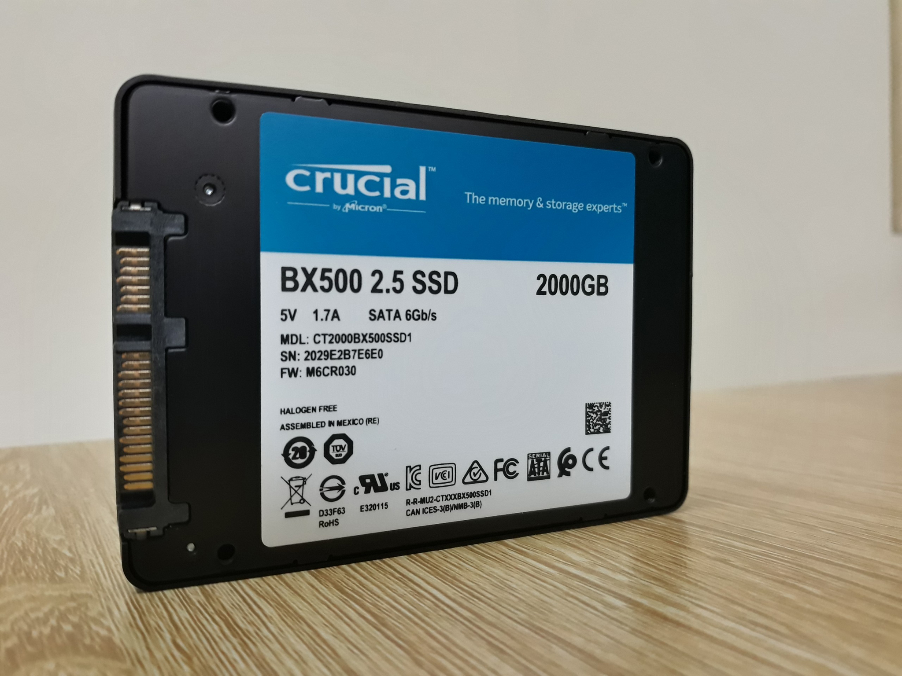

Dimensioni e Connessioni
La forma fisica determina come il drive si collega alla scheda madre e dove può essere posizionato nel Case.

Formato 2.5" (SATA)
Classico formato rettangolare. Richiede due cavi: uno per i dati (che va alla scheda madre) e uno per l'alimentazione (che viene dall'Alimentatore).

Formato M.2 (NVMe)
Una piccola scheda che assomiglia a una gomma da masticare. Si avvita direttamente sulla Scheda Madre. Nessun cavo necessario, aspetto pulitissimo.